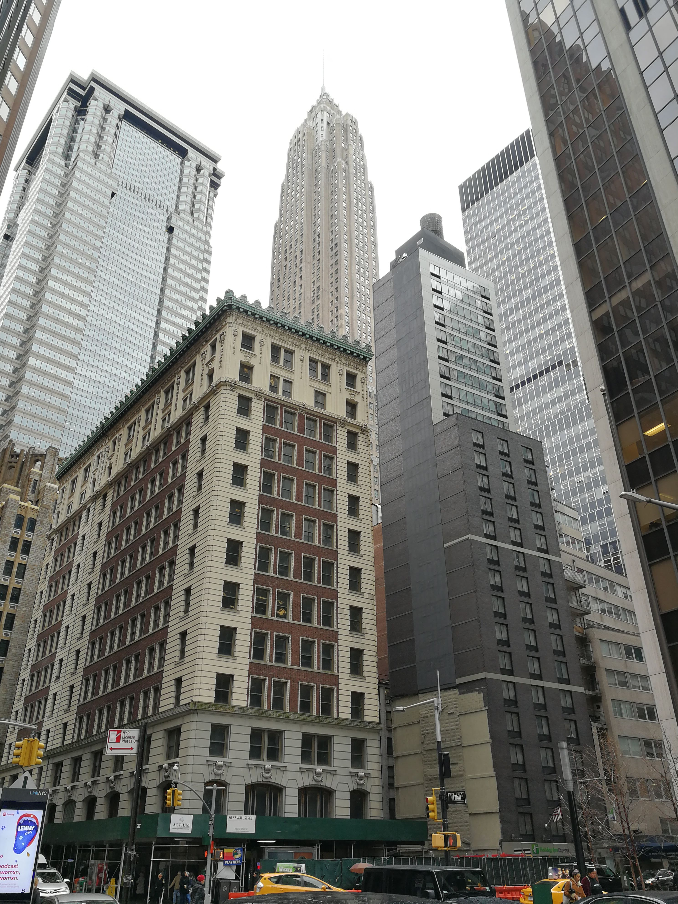
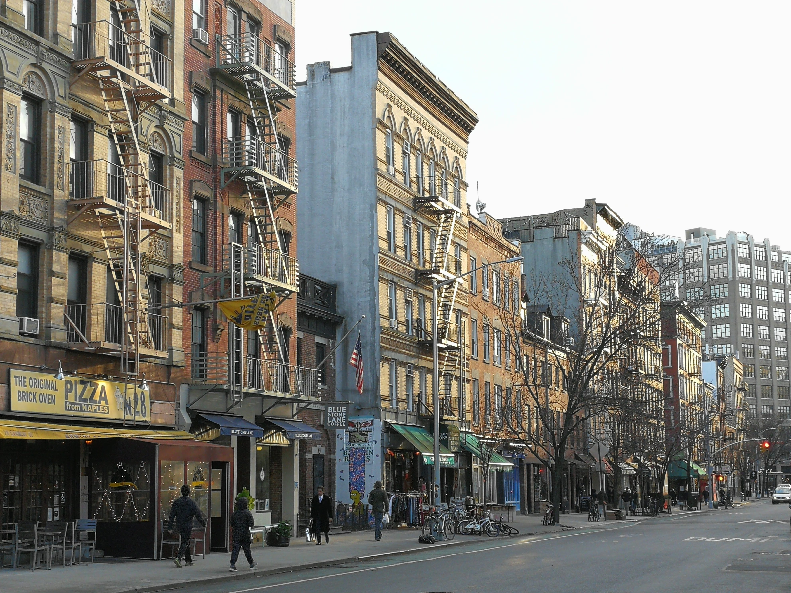

Panorama ciego de Nueva York
 Si no son los pájaros cubiertos de ceniza, si no son los gemidos que golpean las ventanas de la boda, serán las delicadas criaturas del aire que manan la sangre nueva por la oscuridad inextinguible. Pero no, no son los pájaros, porque los pájaros están a punto de ser bueyes; pueden ser rocas blancas con la ayuda de la luna y son siempre muchachos heridos antes de que los jueces levanten la tela. Todos comprenden el dolor que se relaciona con la muerte, pero el verdadero dolor no está presente en el espíritu. No está en el aire ni en nuestra vida, ni en estas terrazas llenas de humo. El verdadero dolor que mantiene despiertas las cosas es una pequeña quemadura infinita en los ojos inocentes de los otros sistemas. Un traje abandonado pesa tanto en los hombros que muchas veces el cielo los agrupa en ásperas manadas. Y las que mueren de parto saben en la última hora que todo rumor será piedra y toda huella latido. Nosotros ignoramos que el pensamiento tiene arrabales donde el filósofo es devorado por los chinos y las orugas. Y algunos niños idiotas han encontrado por las cocinas pequeñas golondrinas con muletas que sabían pronunciar la palabra amor.  No, no son los pájaros. No es un pájaro el que expresa la turbia fiebre de laguna, ni el ansia de asesinato que nos oprime cada momento, ni el metálico rumor de suicidio que nos anima cada madrugada, Es una cápsula de aire donde nos duele todo el mundo, es un pequeño espacio vivo al loco unisón de la luz, es una escala indefinible donde las nubes y rosas olvidan el griterío chino que bulle por el desembarcadero de la sangre. Yo muchas veces me he perdido para buscar la quemadura que mantiene despiertas las cosas y sólo he encontrado marineros echados sobre las barandillas y pequeñas criaturas del cielo enterradas bajo la nieve. Pero el verdadero dolor estaba en otras plazas donde los peces cristalizados agonizaban dentro de los troncos; plazas del cielo extraño para las antiguas estatuas ilesas y para la tierna intimidad de los volcanes. No hay dolor en la voz. Sólo existen los dientes, pero dientes que callarán aislados por el raso negro. No hay dolor en la voz. Aquí sólo existe la Tierra. La Tierra con sus puertas de siempre que llevan al rubor de los frutos.
Una de las obras de teatro más importantes ha sido: El maleficio de la mariposa